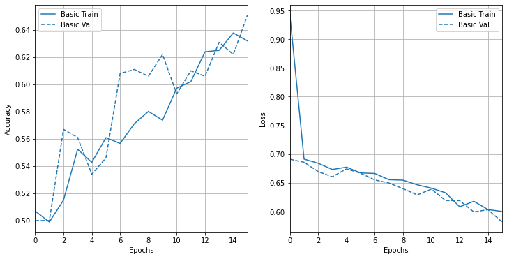

Reconocimiento de las imágenes de CIFAR10 (cats vs dogs) usando una CNN¶
30 min | Última modificación: Abril 6, 2020.
Basado en https://www.tensorflow.org/tutorials/images/classification
Importación de librerías¶
[1]:
import os
import numpy as np
import matplotlib.pyplot as plt
%matplotlib inline
import tensorflow as tf
print(tf.__version__)
#
# Librerias adicionales para graficación
#
import tensorflow_docs as tfdocs
import tensorflow_docs.plots
import tensorflow_docs.modeling
#
# Establece el nivel de reporte en
# pantalla de TensorFlow
#
import logging
logger = tf.get_logger().setLevel(logging.ERROR)
2.1.0
Carga y configuración del dataset¶
[2]:
#
# Descarga el arhivo desde una URL y retorna la
# localización del archivo en el disco duro.
# El archivo es descomprimido automáticamente.
#
path_to_zip = tf.keras.utils.get_file(
fname="cats_and_dogs.zip",
origin="https://storage.googleapis.com/mledu-datasets/cats_and_dogs_filtered.zip",
extract=True,
)
#
# Directorio del dataset
#
PATH = os.path.join(os.path.dirname(path_to_zip), "cats_and_dogs_filtered")
#
# directorios para la muestra de entrenamiento
#
train_dir = os.path.join(PATH, "train")
train_cats_dir = os.path.join(train_dir, "cats")
train_dogs_dir = os.path.join(train_dir, "dogs")
#
# Directorios para la muestra de validación
#
validation_dir = os.path.join(PATH, "validation")
validation_cats_dir = os.path.join(validation_dir, "cats")
validation_dogs_dir = os.path.join(validation_dir, "dogs")
Exploración del dataset¶
[3]:
#
# Cantidad de imágenes
#
num_cats_tr = len(os.listdir(train_cats_dir))
num_dogs_tr = len(os.listdir(train_dogs_dir))
num_cats_val = len(os.listdir(validation_cats_dir))
num_dogs_val = len(os.listdir(validation_dogs_dir))
total_train = num_cats_tr + num_dogs_tr
total_val = num_cats_val + num_dogs_val
print("total training cat images:", num_cats_tr)
print("total training dog images:", num_dogs_tr)
print("--")
print("total validation cat images:", num_cats_val)
print("total validation dog images:", num_dogs_val)
print("--")
print("Total training images:", total_train)
print("Total validation images:", total_val)
total training cat images: 1000
total training dog images: 1000
--
total validation cat images: 500
total validation dog images: 500
--
Total training images: 2000
Total validation images: 1000
Preparación de los datos¶
[4]:
#
# Parámetros para la generación de los datasets
# de entrenamiento y validación
#
batch_size = 128
IMG_HEIGHT = 150
IMG_WIDTH = 150
[5]:
#
# Generación del dataset de entrenamiento
#
train_image_generator = tf.keras.preprocessing.image.ImageDataGenerator(
rescale=1.0 / 255
)
train_data_gen = train_image_generator.flow_from_directory(
batch_size=batch_size,
directory=train_dir,
shuffle=True,
target_size=(IMG_HEIGHT, IMG_WIDTH),
class_mode="binary",
)
Found 2000 images belonging to 2 classes.
[6]:
#
# Generación del dataset de validación
#
validation_image_generator = tf.keras.preprocessing.image.ImageDataGenerator(
rescale=1.0 / 255
)
val_data_gen = validation_image_generator.flow_from_directory(
batch_size=batch_size,
directory=validation_dir,
target_size=(IMG_HEIGHT, IMG_WIDTH),
class_mode="binary",
)
Found 1000 images belonging to 2 classes.
Visualización de las imágenes¶
[7]:
#
# Función para la visualización de imágenes
#
def plotImages(images_arr):
fig, axes = plt.subplots(1, 5, figsize=(20, 20))
axes = axes.flatten()
for img, ax in zip(images_arr, axes):
ax.imshow(img)
ax.axis("off")
plt.tight_layout()
plt.show()
[8]:
#
# Visualización de las imágenes del
# dataset de entrenamiento
#
sample_training_images, _ = next(train_data_gen)
plotImages(sample_training_images[:5])

Creación y compilación del modelo base¶
[9]:
model = tf.keras.Sequential(
[
tf.keras.layers.Conv2D(
16,
3,
padding="same",
activation="relu",
input_shape=(IMG_HEIGHT, IMG_WIDTH, 3),
),
tf.keras.layers.MaxPooling2D(),
tf.keras.layers.Conv2D(32, 3, padding="same", activation="relu"),
tf.keras.layers.MaxPooling2D(),
tf.keras.layers.Conv2D(64, 3, padding="same", activation="relu"),
tf.keras.layers.MaxPooling2D(),
tf.keras.layers.Flatten(),
tf.keras.layers.Dense(512, activation="relu"),
tf.keras.layers.Dense(1),
]
)
model.compile(
optimizer="adam",
loss=tf.keras.losses.BinaryCrossentropy(from_logits=True),
metrics=["accuracy"],
)
model.summary()
Model: "sequential"
_________________________________________________________________
Layer (type) Output Shape Param #
=================================================================
conv2d (Conv2D) (None, 150, 150, 16) 448
_________________________________________________________________
max_pooling2d (MaxPooling2D) (None, 75, 75, 16) 0
_________________________________________________________________
conv2d_1 (Conv2D) (None, 75, 75, 32) 4640
_________________________________________________________________
max_pooling2d_1 (MaxPooling2 (None, 37, 37, 32) 0
_________________________________________________________________
conv2d_2 (Conv2D) (None, 37, 37, 64) 18496
_________________________________________________________________
max_pooling2d_2 (MaxPooling2 (None, 18, 18, 64) 0
_________________________________________________________________
flatten (Flatten) (None, 20736) 0
_________________________________________________________________
dense (Dense) (None, 512) 10617344
_________________________________________________________________
dense_1 (Dense) (None, 1) 513
=================================================================
Total params: 10,641,441
Trainable params: 10,641,441
Non-trainable params: 0
_________________________________________________________________
Entrenamiento del modelo base sobre el dataset original¶
[10]:
EPOCHS = 16
history = model.fit_generator(
train_data_gen,
steps_per_epoch=total_train // batch_size,
epochs=EPOCHS,
validation_data=val_data_gen,
validation_steps=total_val // batch_size,
)
Train for 15 steps, validate for 7 steps
Epoch 1/16
15/15 [==============================] - 22s 1s/step - loss: 1.1001 - accuracy: 0.5064 - val_loss: 0.6812 - val_accuracy: 0.5078
Epoch 2/16
15/15 [==============================] - 23s 2s/step - loss: 0.6607 - accuracy: 0.5646 - val_loss: 0.6548 - val_accuracy: 0.5748
Epoch 3/16
15/15 [==============================] - 24s 2s/step - loss: 0.6172 - accuracy: 0.6277 - val_loss: 0.6113 - val_accuracy: 0.6741
Epoch 4/16
15/15 [==============================] - 31s 2s/step - loss: 0.5719 - accuracy: 0.6797 - val_loss: 0.6202 - val_accuracy: 0.6127
Epoch 5/16
15/15 [==============================] - 32s 2s/step - loss: 0.5184 - accuracy: 0.7185 - val_loss: 0.5820 - val_accuracy: 0.7042
Epoch 6/16
15/15 [==============================] - 35s 2s/step - loss: 0.4743 - accuracy: 0.7628 - val_loss: 0.6047 - val_accuracy: 0.6540
Epoch 7/16
15/15 [==============================] - 31s 2s/step - loss: 0.4255 - accuracy: 0.7890 - val_loss: 0.5914 - val_accuracy: 0.7020
Epoch 8/16
15/15 [==============================] - 28s 2s/step - loss: 0.3795 - accuracy: 0.8200 - val_loss: 0.5690 - val_accuracy: 0.7188
Epoch 9/16
15/15 [==============================] - 28s 2s/step - loss: 0.3388 - accuracy: 0.8515 - val_loss: 0.6414 - val_accuracy: 0.7221
Epoch 10/16
15/15 [==============================] - 27s 2s/step - loss: 0.3179 - accuracy: 0.8584 - val_loss: 0.6291 - val_accuracy: 0.7310
Epoch 11/16
15/15 [==============================] - 28s 2s/step - loss: 0.2465 - accuracy: 0.9012 - val_loss: 0.7043 - val_accuracy: 0.7087
Epoch 12/16
15/15 [==============================] - 29s 2s/step - loss: 0.2054 - accuracy: 0.9119 - val_loss: 0.6910 - val_accuracy: 0.7210
Epoch 13/16
15/15 [==============================] - 29s 2s/step - loss: 0.1720 - accuracy: 0.9300 - val_loss: 0.7899 - val_accuracy: 0.7210
Epoch 14/16
15/15 [==============================] - 30s 2s/step - loss: 0.1509 - accuracy: 0.9444 - val_loss: 0.7786 - val_accuracy: 0.7232
Epoch 15/16
15/15 [==============================] - 29s 2s/step - loss: 0.1120 - accuracy: 0.9642 - val_loss: 0.8763 - val_accuracy: 0.7109
Epoch 16/16
15/15 [==============================] - 30s 2s/step - loss: 0.1122 - accuracy: 0.9567 - val_loss: 0.8767 - val_accuracy: 0.7121
[11]:
#
# El modelo presenta sobre entrenamiento
#
plt.figure(figsize=(12, 6))
plt.subplot(1, 2, 1)
tfdocs.plots.HistoryPlotter().plot({'Modelo base': history}, metric = "accuracy")
plt.subplot(1, 2, 2)
tfdocs.plots.HistoryPlotter().plot({'Modelo base': history}, metric = "loss")

Aumento del tamaño del dataset¶
Por giro horizontal de la imágen¶
[12]:
#
# Ejemplo
#
image_gen = tf.keras.preprocessing.image.ImageDataGenerator(rescale=1.0 / 255, horizontal_flip=True)
train_data_gen = image_gen.flow_from_directory(
batch_size=batch_size,
directory=train_dir,
shuffle=True,
target_size=(IMG_HEIGHT, IMG_WIDTH),
)
augmented_images = [train_data_gen[0][0][0] for i in range(5)]
plotImages(augmented_images)
Found 2000 images belonging to 2 classes.

Por rotación aleatoria de la imagen¶
[13]:
#
# Ejemplo
#
image_gen = tf.keras.preprocessing.image.ImageDataGenerator(rescale=1.0 / 255, rotation_range=45)
train_data_gen = image_gen.flow_from_directory(
batch_size=batch_size,
directory=train_dir,
shuffle=True,
target_size=(IMG_HEIGHT, IMG_WIDTH),
)
augmented_images = [train_data_gen[0][0][0] for i in range(5)]
plotImages(augmented_images)
Found 2000 images belonging to 2 classes.

Por zoom de la imágen¶
[14]:
#
# Ejemplo
#
image_gen = tf.keras.preprocessing.image.ImageDataGenerator(rescale=1.0 / 255, zoom_range=0.5)
train_data_gen = image_gen.flow_from_directory(
batch_size=batch_size,
directory=train_dir,
shuffle=True,
target_size=(IMG_HEIGHT, IMG_WIDTH),
)
augmented_images = [train_data_gen[0][0][0] for i in range(5)]
plotImages(augmented_images)
Found 2000 images belonging to 2 classes.

Aumento de las imágenes del dataset de entrenamiento¶
[15]:
image_gen_train = tf.keras.preprocessing.image.ImageDataGenerator(
rescale=1.0 / 255,
rotation_range=45,
width_shift_range=0.15,
height_shift_range=0.15,
horizontal_flip=True,
zoom_range=0.5,
)
train_data_gen = image_gen_train.flow_from_directory(
batch_size=batch_size,
directory=train_dir,
shuffle=True,
target_size=(IMG_HEIGHT, IMG_WIDTH),
class_mode="binary",
)
augmented_images = [train_data_gen[0][0][0] for i in range(5)]
plotImages(augmented_images)
Found 2000 images belonging to 2 classes.

Generador de datos de validación¶
[16]:
image_gen_val = tf.keras.preprocessing.image.ImageDataGenerator(rescale=1.0 / 255)
val_data_gen = image_gen_val.flow_from_directory(
batch_size=batch_size,
directory=validation_dir,
target_size=(IMG_HEIGHT, IMG_WIDTH),
class_mode="binary",
)
Found 1000 images belonging to 2 classes.
Especificación y compilación del nuevo modelo¶
[17]:
#
# Este modelo tiene la misma configuración del modelo base
# pero adiciona Dropout para evitar el sobreajuste.
#
model_new = tf.keras.Sequential(
[
tf.keras.layers.Conv2D(
16,
3,
padding="same",
activation="relu",
input_shape=(IMG_HEIGHT, IMG_WIDTH, 3),
),
tf.keras.layers.MaxPooling2D(),
tf.keras.layers.Dropout(0.2),
tf.keras.layers.Conv2D(32, 3, padding="same", activation="relu"),
tf.keras.layers.MaxPooling2D(),
tf.keras.layers.Conv2D(64, 3, padding="same", activation="relu"),
tf.keras.layers.MaxPooling2D(),
tf.keras.layers.Dropout(0.2),
tf.keras.layers.Flatten(),
tf.keras.layers.Dense(512, activation="relu"),
tf.keras.layers.Dense(1),
]
)
model_new.compile(
optimizer="adam",
loss=tf.keras.losses.BinaryCrossentropy(from_logits=True),
metrics=["accuracy"],
)
model_new.summary()
Model: "sequential_1"
_________________________________________________________________
Layer (type) Output Shape Param #
=================================================================
conv2d_3 (Conv2D) (None, 150, 150, 16) 448
_________________________________________________________________
max_pooling2d_3 (MaxPooling2 (None, 75, 75, 16) 0
_________________________________________________________________
dropout (Dropout) (None, 75, 75, 16) 0
_________________________________________________________________
conv2d_4 (Conv2D) (None, 75, 75, 32) 4640
_________________________________________________________________
max_pooling2d_4 (MaxPooling2 (None, 37, 37, 32) 0
_________________________________________________________________
conv2d_5 (Conv2D) (None, 37, 37, 64) 18496
_________________________________________________________________
max_pooling2d_5 (MaxPooling2 (None, 18, 18, 64) 0
_________________________________________________________________
dropout_1 (Dropout) (None, 18, 18, 64) 0
_________________________________________________________________
flatten_1 (Flatten) (None, 20736) 0
_________________________________________________________________
dense_2 (Dense) (None, 512) 10617344
_________________________________________________________________
dense_3 (Dense) (None, 1) 513
=================================================================
Total params: 10,641,441
Trainable params: 10,641,441
Non-trainable params: 0
_________________________________________________________________
Entrenamiento del nuevo modelo¶
[19]:
history = model_new.fit_generator(
train_data_gen,
steps_per_epoch=total_train // batch_size,
epochs=EPOCHS,
validation_data=val_data_gen,
)
Train for 15 steps, validate for 8 steps
Epoch 1/16
15/15 [==============================] - 27s 2s/step - loss: 1.0526 - accuracy: 0.5069 - val_loss: 0.6911 - val_accuracy: 0.5000
Epoch 2/16
15/15 [==============================] - 27s 2s/step - loss: 0.6913 - accuracy: 0.4989 - val_loss: 0.6859 - val_accuracy: 0.5000
Epoch 3/16
15/15 [==============================] - 29s 2s/step - loss: 0.6841 - accuracy: 0.5150 - val_loss: 0.6696 - val_accuracy: 0.5670
Epoch 4/16
15/15 [==============================] - 28s 2s/step - loss: 0.6734 - accuracy: 0.5524 - val_loss: 0.6606 - val_accuracy: 0.5610
Epoch 5/16
15/15 [==============================] - 34s 2s/step - loss: 0.6778 - accuracy: 0.5427 - val_loss: 0.6743 - val_accuracy: 0.5340
Epoch 6/16
15/15 [==============================] - 38s 3s/step - loss: 0.6672 - accuracy: 0.5609 - val_loss: 0.6668 - val_accuracy: 0.5460
Epoch 7/16
15/15 [==============================] - 36s 2s/step - loss: 0.6657 - accuracy: 0.5566 - val_loss: 0.6551 - val_accuracy: 0.6080
Epoch 8/16
15/15 [==============================] - 33s 2s/step - loss: 0.6554 - accuracy: 0.5710 - val_loss: 0.6498 - val_accuracy: 0.6110
Epoch 9/16
15/15 [==============================] - 32s 2s/step - loss: 0.6540 - accuracy: 0.5801 - val_loss: 0.6398 - val_accuracy: 0.6060
Epoch 10/16
15/15 [==============================] - 32s 2s/step - loss: 0.6463 - accuracy: 0.5737 - val_loss: 0.6291 - val_accuracy: 0.6220
Epoch 11/16
15/15 [==============================] - 32s 2s/step - loss: 0.6410 - accuracy: 0.5972 - val_loss: 0.6391 - val_accuracy: 0.5930
Epoch 12/16
15/15 [==============================] - 34s 2s/step - loss: 0.6332 - accuracy: 0.6020 - val_loss: 0.6193 - val_accuracy: 0.6100
Epoch 13/16
15/15 [==============================] - 34s 2s/step - loss: 0.6086 - accuracy: 0.6239 - val_loss: 0.6190 - val_accuracy: 0.6060
Epoch 14/16
15/15 [==============================] - 34s 2s/step - loss: 0.6186 - accuracy: 0.6250 - val_loss: 0.5993 - val_accuracy: 0.6310
Epoch 15/16
15/15 [==============================] - 34s 2s/step - loss: 0.6043 - accuracy: 0.6378 - val_loss: 0.6034 - val_accuracy: 0.6220
Epoch 16/16
15/15 [==============================] - 34s 2s/step - loss: 0.5997 - accuracy: 0.6319 - val_loss: 0.5819 - val_accuracy: 0.6510
[20]:
plt.figure(figsize=(12, 6))
plt.subplot(1, 2, 1)
tfdocs.plots.HistoryPlotter().plot({'Basic': history}, metric = "accuracy")
plt.subplot(1, 2, 2)
tfdocs.plots.HistoryPlotter().plot({'Basic': history}, metric = "loss")

[21]:
#
# Historia
#
import pandas as pd
hist = pd.DataFrame(history.history)
hist['epoch'] = history.epoch
hist
[21]:
| loss | accuracy | val_loss | val_accuracy | epoch | |
|---|---|---|---|---|---|
| 0 | 0.942222 | 0.506944 | 0.691141 | 0.500 | 0 |
| 1 | 0.691402 | 0.498932 | 0.685899 | 0.500 | 1 |
| 2 | 0.684121 | 0.514957 | 0.669612 | 0.567 | 2 |
| 3 | 0.673284 | 0.552350 | 0.660640 | 0.561 | 3 |
| 4 | 0.677347 | 0.542735 | 0.674306 | 0.534 | 4 |
| 5 | 0.667302 | 0.560897 | 0.666800 | 0.546 | 5 |
| 6 | 0.666360 | 0.556624 | 0.655101 | 0.608 | 6 |
| 7 | 0.655522 | 0.571047 | 0.649812 | 0.611 | 7 |
| 8 | 0.654745 | 0.580128 | 0.639831 | 0.606 | 8 |
| 9 | 0.646651 | 0.573718 | 0.629052 | 0.622 | 9 |
| 10 | 0.640800 | 0.597222 | 0.639123 | 0.593 | 10 |
| 11 | 0.632788 | 0.602030 | 0.619321 | 0.610 | 11 |
| 12 | 0.608312 | 0.623932 | 0.619028 | 0.606 | 12 |
| 13 | 0.617921 | 0.625000 | 0.599326 | 0.631 | 13 |
| 14 | 0.603535 | 0.637821 | 0.603391 | 0.622 | 14 |
| 15 | 0.600158 | 0.631944 | 0.581893 | 0.651 | 15 |